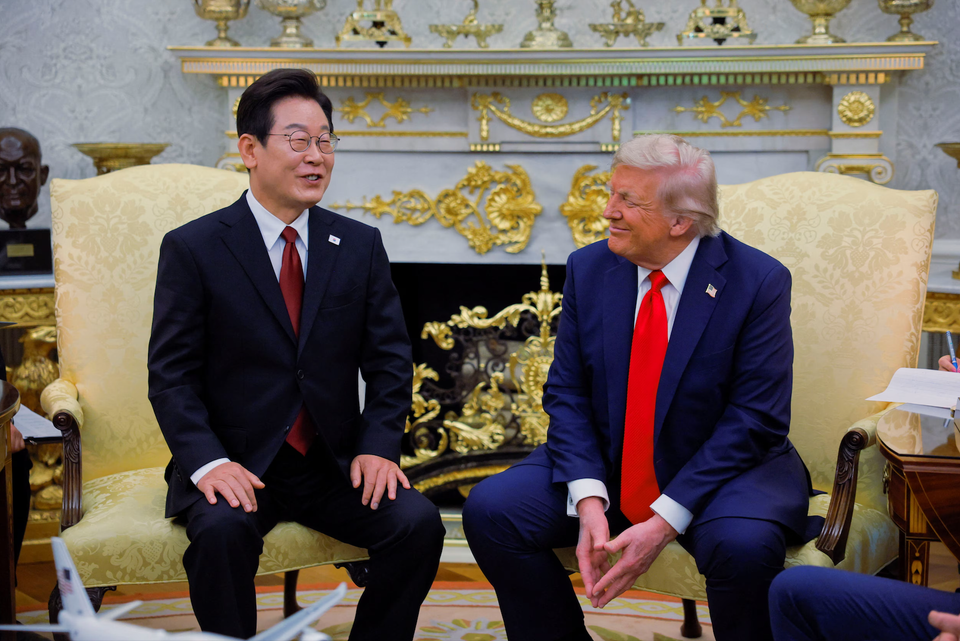

世界苦茶08月26日新闻 | 34条 | 北京為閱兵市中心增加限制

北京為閱兵市中心增加限制 | 特朗普讚賞金正恩 | 特朗普以關稅威脅中國稀土出口 | 澳大利亞驅逐伊朗大使
每日三條新聞解析
苦茶数据
美元兑人民币：7.16（昨日7.15，前日7.17）
美元兑日元：147.69（昨日147.34，前日146.87）
上证指数：3868（昨日3849，前日3825）
标普500指数：6439（昨日6466，前日6370）
比特币：110462（昨日112553，前日114880）
布伦特原油：68.33（昨日67.75，前日67.73）
中国新闻
• 外交部否认参与维和 ：中国外交部否认外媒报道中国曾表态愿意参与乌克兰国际维和部队，并称中国在乌克兰危机的立场是一贯、明确的。综合中新社、环球网等媒体报道，中国外交部发言人郭嘉昆星期一主持的例行记者会上，有记者提问称，德国《世界报》报道欧盟国家外交代表消息指，中国表示过愿意参与在乌克兰有可能出现的“国际维和部队”，并请中国外交部评论或证实。郭嘉昆回复说，有关报道不属实。“中方在乌克兰危机问题上的立场是一贯的、明确的”。
• 国博闭馆配合阅兵 ：中国纪念抗战胜利80周年活动和九三阅兵式举行在即，中国国家博物馆公告，将从来临星期天起，闭馆四天。中国国家博物馆星期一在微信公众号“国博君”上公告，为配合天安门地区活动安排，中国国家博物馆将于星期天至下星期三期间，暂停开放。据《北京日报》报道，天安门地区管理委员会星期天发布通告，为确保专项活动顺利安全，天安门广场9月1日至3日暂停开放，9月4日适时恢复开放。
• 中方回应越南造岛 ：美国智库称，越南在主权受争议的南中国海显著扩大填海造陆工程后，中国外交部星期一回应相关提问时称，南沙群岛是中国的固有领土，坚决反对有关国家在非法侵占的岛礁上开展建设活动。中国外交部发言人郭嘉昆星期一主持例行记者会。有记者就越南在南中国海的岛屿建设活动提问。郭嘉昆回答，南沙群岛是中国的固有领土，中国坚决反对有关国家在非法侵占的岛礁上开展建设活动，将采取必要措施维护自身领土主权和海洋权益。
• 北京增设净空限制区 ：北京市官方通报，为确保抗战胜利80周年活动安全，将从星期五凌晨零时起，增设七个净空限制区。北京市公安局新闻办星期一在官方微信公众号“平安北京”上发布通告，为确保中国人民抗日战争暨世界反法西斯战争胜利80周年纪念活动有关飞行活动的安全，根据相关法律法规，北京市政府通告，在部分行政区域内禁止放飞、升放影响飞行安全的鸟类动物和其他物体。官方将东城、西城、朝阳、海淀、丰台、石景山、通州、昌平、门头沟等九个区的行政区域设置为净空限制区的基础上，自星期五零时起至下星期三午夜12时止，将大兴、顺义、房山、平谷、怀柔、密云、延庆等七个区的行政区域增设为净空限制区。
• 中方批美式航行自由 ：中国自然资源部发布中英双语报告，批评美式航行自由缺乏国际法基础，并涉嫌以军事力量威胁地区和平稳定、扰乱国际海洋秩序。据中国央视新闻报道，中国自然资源部海洋发展战略研究所星期一发布《美式“航行自由”法律评估报告》中英文版，并称报告对美国“航行自由”相关主张和实践是否符合国际条约和一般国际法、是否具备法律基础进行评估。报告指美式航行自由包含大量美国自创概念、自设标准的所谓习惯国际法，与国际法和许多国家的实践相悖。美国借助这些主张和行动，极尽所能压缩其他国家的合法权益，扩大其权利和自由，以获取不受法律约束的自由。
• 中国煤电装机再增 ：最新报告显示，今年上半年中国煤电新增装机容量大幅增长，同时清洁能源新增装机也创下历史纪录。据法新社报道，几十年来，煤炭一直是中国的主要能源，但近年来风能和太阳能装机的爆炸式增长，让人们看到了中国能够摆脱高污染化石燃料的希望。目前煤炭约占中国发电量的一半，较2016年的四分之三显著下降。
亚太印太新闻
• 特朗普赞赏金正恩 ：美国总统特朗普在与韩国总统李在明首次会面时对朝鲜领导人金正恩表示赞赏，多次提到他与金正恩保持良好关系，还说希望能在今年与金正恩会面。特朗普也说“我们百分百支持”李在明，但拒绝更改韩国关税协议的条款。综合《纽约时报》和彭博社报道，特朗普星期一在白宫椭圆形办公室欢迎李在明时说，朝鲜“潜力巨大”，“我希望在今年与他会面，我期待在适当时候与金正恩会面。”
• 台湾绿能中心涉贪 ：台湾经济部绿能科技产业推动中心爆出弊案，台北地检署星期一指挥台南市调查处搜索22处，以及约谈14人，当中包括绿推中心郑姓前副执行长。综合《联合报》、ETtoday新闻云、《自由时报》等台媒报道，全案源于调查局台南市调查处掌握情资，报请台北地检署派检肃黑金专组检察官指挥侦办。检调经搜证、分析案关资料及清查金流后，怀疑郑姓副执行长任职于经济部绿能科技产业推动中心时期，涉嫌向两家绿能业者收贿，其中一家为上市公司，违反贪污治罪条例不违背职务收贿、财产来源不明及洗钱防制法洗钱等罪嫌。台北地检署星期一指挥台南市调处兵分22路，搜索郑姓副执行长等九人住居所、办公位置及两家业者，同步约谈郑姓副执行长等九人，以及五名相关证人到案说明。
• 赖清德推180亿农渔方案 ：台湾总统赖清德说，政府已提出180亿元新台币的支持方案，从生产到外销等层面协助台湾农渔业应对美国新一轮关税。综合中时新闻网、联合新闻网等报道，赖清德星期一接见农业专家时，宣布以上方案。赖清德强调，面对美国新的关税政策，政府已经提出180亿元农渔产业支持方案，通过金融支持、提升产业竞争力、开拓多元市场等三大面向、六大措施，提供从生产到外销等各种不同层面协助。
• 民进党加紧监督蓝营 ：台湾媒体报道，执政民进党正加速转换选战模式，除了强化府院党横向协作、协助政策议题攻防之外，也计划与地方议会党团、党公职紧密合作，强化对蓝营执政县市的监督，台中市长卢秀燕是锁定目标之一，入列头号目标。
• 柬埔寨通过剥夺国籍法 ：柬埔寨国会星期一全票通过一项法案，允许当局剥夺与外国勾结者的国籍。法新社报道，当天出席国会的120名议员，包括首相洪马内在内，均投票赞成这项法案。多年来，柬埔寨政府屡遭批评被指利用高压法律限制反对派活动和正常政治辩论。由50个权利团体组成的联盟在会前发表联合声明，警告法案“措辞含糊”，势必对所有柬埔寨公民的言论自由产生“严重寒蝉效应”。
• 印尼美军启动联合军演 ：印度尼西亚与美国星期一启动为期逾一周的“超级加鲁达之盾”联合军演，联合包括澳大利亚、日本、新加坡、法国、新西兰、英国在内的11个国家盟友参演，旨在维护亚太地区稳定。法新社报道，这场年度演习将在雅加达、西苏门答腊岛及廖内群岛多地展开，直至9月4日结束。参演规模创下历届之最，共有逾4100名印尼士兵和1300名美军参与。美军印太司令部司令帕帕罗在开幕式上指出，此次演习“规模空前”，有助于各国提升威慑力。他强调，演习的意义在于展示各方共同捍卫主权原则的决心，“阻止任何试图以武力改变现状的人”。
• 李在明拒美战略灵活性 ：韩联社报道，韩国总统李在明说，首尔难以接受美方提出的在韩美军运作上采取“战略灵活性”的要求。李在明是在飞赴华盛顿途中作出上述表态。他将于星期一与美国总统特朗普举行首脑会晤，并预计重点讨论国家安全、韩国国防开支以及双方于7月底达成的贸易协议细节。
• 日本劝各国慎参加阅兵 ：日本媒体报道，日本政府呼吁各国审慎考虑是否参与中国抗战胜利纪念活动。日本共同社星期天引述多名日本外交消息人士称，中国将于9月3日在北京天安门举行抗战胜利80周年纪念活动和阅兵仪式，日本政府已通过外交渠道呼吁欧洲和亚洲各国审慎考虑是否参加，以避免中国主导的历史认识在国际社会扩大传播。在上述活动前，上海合作组织峰会将于8月31日至9月1日在天津举行。俄罗斯总统普京预计将在参加天津峰会后，前往北京出席纪念活动和阅兵式。
• 蔡英文为赖清德打气 ：台湾前总统蔡英文星期天与现任总统赖清德会面时说，台湾面临的内外挑战很多，她特别向赖清德加油和打气，并希望民众继续支持赖清德与执政团队。蔡英文星期天在脸书发文说，她当天下午与赖清德、 副总统萧美琴三人相约在赖清德的官邸会面。蔡英文称，台湾面临的内外挑战很多，她特别向赖清德加油和打气，“在这个不容易的时代，我们需要更多的努力”。
科技新闻
• SpaceX取消星舰试飞 ：美国太空探索技术公司SpaceX宣布，取消原定的“星舰”巨型火箭第10次试飞，理由是需排查地面系统问题。法新社报道，原计划显示，星舰应于星期天晚从得克萨斯州南部“星际基地”升空，进行一小时的不载人飞行。但在发射前15分钟，SpaceX突然在社交平台X上宣布暂停任务，且未说明细节。而在一小时前，SpaceX首席执行长马斯克还曾发帖称“星舰10号今晚发射”。分析推测，发射或顺延至星期一或星期二，但公司未公布明确时间。
• 马斯克起诉苹果OpenAI ：马斯克的X和xAI周一在美国得克萨斯州的联邦法院提起诉讼指控称，苹果将OpenAI集成到iPhone操作系统的决定抑制了 AI 行业的竞争和创新，并剥夺了消费者的选择权，损害了消费者的利益，并寻求法院下令禁止苹果和 OpenAI 继续其所谓的“非法安排”以及数十亿美元的赔偿。马斯克表示，除了OpenAI的ChatGPT之外，其他任何应用都无法登上App Store排行榜榜首，而该排行榜是全球应用开发者梦寐以求的焦点。马斯克公司的律师在诉讼中表示，苹果和 OpenAI 的“独家协议使得 ChatGPT 成为唯一集成到 iPhone 的生成式AI聊天机器人，并且“锁定了市场以维持其垄断地位，并阻止像 X 和 xAI 这样的创新者参与竞争”。
• 沙特推伊斯兰AI应用 ：沙特阿拉伯领先的人工智能公司 Humain 推出了一款面向阿拉伯和穆斯林的对话式人工智能应用，该国正寻求在该技术领域取得区域领导地位。该公司周一在声明中表示，由Allam大语言模型驱动的Humain聊天应用程序，是围绕伊斯兰价值观和传统设计的。该应用最初仅在沙特阿拉伯提供，将支持阿拉伯语和英语的双语对话，并兼容包括埃及和黎巴嫩方言在内的多种阿拉伯语方言。该聊天机器人的开发团队由一百二十名人工智能专家组成，其中一半为女性。据称 Allam 基于反映该地区文化和价值观的数据集及防护措施进行训练。此类管控措施也可能帮助该国限制用户可获取的信息内容。
• 中国卫星互联网牌照发放倒计时，追赶星链： 七月下旬以来，中国卫星互联网建设明显提速。从7月27日至8月17日，短短二十余天时间，中国星网 GW 星座已成功将五组低轨卫星送入太空，发射间隔从此前的1-2个月大幅缩短至3-5天，累计发射卫星数量也从七月之前的34颗大幅提升至目前的72颗。国内券商机构分析认为，星网计划正进入密集发射阶段。这标志着中国在与星链竞争的宏伟计划中又迈出关键一步。与此同时，获悉，相关部门近期将会发放卫星互联网牌照。中国卫星互联网领域一位资深技术专家表示：“牌照的发放，意味着我国卫星互联网商业运营迈出第一步。但要实现像星链那样提供卫星互联网服务，仍需2~3年左右的时间。”
财经新闻
• 特朗普稱中国再停止稀土出口，將征200%关税： 美国总统特朗普25日就中国出口的稀土磁铁表示，如果再次停止出口，将采取200%的关税等应对措施。特朗普在会见韩国总统李在明回答记者提问时提及此事的。特朗普在牵制中国的同时表示，两国关系正在大幅改善，强调了积极的姿态。中美两国七月底在斯德哥尔摩举行的部长级磋商中，就中国恢复稀土磁铁出口达成一致。春季以来，在双方征收累计超过 100% 关税时，中方曾暂停出口。目前，中国正在增加供应。中国七月份向美国出口的稀土磁铁同比增长5%，达到619吨。环比增加7成，创半年来最高水平。
• 奇瑞缩短付款周期 ：中国汽车制造商奇瑞汽车称，已将供应商平均支付账期压缩至47天。综合《证券日报》和第一财经报道，中国工信部装备工业一司司长王卫明上周五至周六，带队前往奇瑞汽车，就这家车企生产经营状况以及反对非理性竞争相关工作展开调研。奇瑞集团董事长尹同跃介绍称，奇瑞通过实施“四大组合拳”，已将供应商平均支付账期压缩至47天。
• 协和新能源投委内瑞拉 ：知情高管称，中国协和新能源集团已在两座委内瑞拉油矿进行开采，并计划投资超过10亿美元在明年底前日产六万桶原油。集团与委内瑞拉签订20年协议，参与当地石油生产。路透社星期五引述一名直接参与上述计划的中国协和新能源集团高管，报道以上消息。报道称，在总统马杜罗执政下，委内瑞拉因面对国际制裁，难以吸引外资。上述计划标志着中国民营企业对石油输出国组织成员的罕有投资。有关投资金额和生产计划也首次被报道。
• 沪深成交额创新高 ：中国上海和深圳两地股市的成交额再次突破3万亿元人民币，写下历史次高。综合澎湃新闻和财联社报道，沪深两市星期一全天成交额达3万1411亿元，较上个交易日增加5944亿元，仅次于2024年10月8日沪深两市创下的3万4519亿元。其中，沪市成交额1万3609亿元，比上一交易日1万零951亿元增加2658亿元，深市成交额1万7802亿元。
• 稀土股价大涨 ：中国发布《稀土开采和稀土冶炼分离总量调控管理暂行办法》，要求稀土生产企业建立稀土产品流向记录制度后，中国多家稀土生产商的股价星期一大涨。在上海挂牌的中国北方稀土收市时上扬近10%。在创业板上市的浙江中科磁业曾大涨12%，收市时上升6.49%。在深交所主板上市的中国稀土集团资源科技曾大涨8.5%，闭市时升6.19%。金力永磁在香港的股价曾飙升18%，截至下午3时30分的股价大涨14.85%。
• 恒大正式港交所退市 ：昔日的中国房地产巨头恒大集团，星期一上午正式从香港交易所退市，结束长达约16年的上市历程。据《香港经济日报》报道，恒大自去年初被颁令清盘后，一直复牌无期，星期一上午9时起，正式从港交所除牌退市。恒大市值高峰时期曾超过3700亿元港元，但遭停牌前仅剩21.5亿元，市值蒸发99%。此前，恒大8月12日晚间公告，公司未能满足香港联交所复牌指引中的任何要求，股票停牌已18个月，触发除牌规则，联交所上市委员会取消恒大上市地位。恒大无意就此决定申请复核。
• A股公司密集赴港上市 ：以电子行业为主的中国A股公司正密集筹划赴香港上市，8月以来已有近20家。据《上海证券报》不完全统计，8月以来有近20家A股公司宣布拟筹划赴港上市，立讯精密、胜宏科技、军信股份、星环科技等知名企业，已正式向香港交易所递交H股发行上市申请。这些公司不乏细分行业龙头，其中立讯精密、胜宏科技的A股总市值均已突破千亿元人民币。
• 亚行拟资助巴铁铁路 ：路透社上星期五引述两名消息人士说，亚洲开发银行将取代中国，为巴基斯坦部分老旧铁路系统的升级提供资金。2015年，中国宣布将在巴基斯坦投资600亿美元，作为“一带一路”倡议的一部分，其中对1800公里铁路的大规模改造是计划的核心工程。然而，经过十年谈判，这一铁路升级项目仍未敲定融资方案；它也是有关计划下中巴合作规模最大的单一项目。同时，巴基斯坦正艰难偿还因其他项目所累积的中国债务。两名消息人士告诉路透社，亚洲开发银行正就牵头提供20亿美元融资，对巴基斯坦南部从卡拉奇至罗里的500公里铁路线进行升级展开谈判，这条铁路线此前是中国项目的一部分。 （翻評：亞投行中日本美國的投票權最高，第四名是印度。）
• 特朗普称美持股英特尔 ：美国总统特朗普周一在真相社交平台上夸耀政府对英特尔公司的入股，并表示他决心达成更多类似的交易，即持有更多私营企业的股份。特朗普发文表示：“关于英特尔的股份交易我一分钱都没掏，它的价值约为 110 亿美元，所有收益都归美国。接下来我将一直为我们的国家达成类似的交易，那些对这一举措感到不满的蠢人没有意识到，这一举措将为美国带来更多资金和工作岗位。我也将帮助那些与美国达成此类有利可图交易的公司。我喜欢看到它们的股价上涨，让美国变得越来越富有，越来越富有。为美国创造更多就业机会！谁不想达成这样的交易呢？”
俄乌战争
• 乌克兰寻月援10亿美元 ：乌克兰总统泽连斯基说，基辅计划每月从盟友那里获得至少10亿美元资金，用于购买美国武器，以对抗俄罗斯。路透社报道，泽连斯基星期一与挪威首相斯托雷在基辅举行的联合记者会上，作出上述宣布。他也说，挪威可以为乌克兰在防空和海上安全方面提供安全保障。斯托雷办公室星期一也说，挪威政府计划明年对乌克兰的援助维持在850亿克朗，与今年的援助水平相同。
国际新闻
• 以色列空袭萨那致伤亡 ：以色列空袭也门首都萨那的总统府邸和其他民用设施，造成至少六人死亡，86人受伤。新华社报道，以色列星期天下午发动袭击，地点包括总统府邸、阿萨尔发电厂和希扎兹发电厂，以及一个燃料储存设施。以色列称，这些设施被用于军事活动。也门胡塞武装控制的卫生部星期一说，伤者包括七名儿童和三名妇女，另有21人情况危急。
• 以军袭击加沙医院 ：巴勒斯坦卫生官员称，以色列袭击加沙南部医院，造成至少20人死亡，包括五名记者和一名民防人员。法新社报道，加沙民防机构星期一称，以色列袭击加沙南部的纳赛尔医院。以色列军方发声明说：“总参谋长指示尽快进行初步调查。对任何无关人员造成的伤害深感遗憾，以军不会将记者作为袭击目标。”
• 澳大利亚将驱逐伊朗驻澳大利亚大使： 澳大利亚总理阿尔巴尼斯8月26日称 ，澳大利亚安全情报局收集的情报表明，伊朗政府指挥了2024年10月对悉尼一家犹太食品公司、2024年12月对墨尔本一个犹太会堂的袭击。澳大利亚将驱逐伊朗驻澳大利亚大使，这是澳大利亚自二战以来首次驱逐大使。澳大利亚还将驻伊朗的澳大利亚外交人员撤到第三国。澳大利亚将立法把伊朗革命卫队列为恐怖组织。伊朗政府尚未就此作出回应。
• 特朗普轰NBC与ABC ：美国总统特朗普再度炮轰全国广播公司和美国广播公司，称它们为“史上最糟糕、最有偏见的电视网”，并表示支持美国联邦通信委员会撤销其电视台牌照。彭博社报道，FCC负责发放并定期更新电视台的运营许可。特朗普星期天在社媒发文称，这两家电视网“97%的报道都在抹黑我”，完全无视他“极高的支持率”，以及“许多人认为是总统历史上最出色的八个月之一”。他进一步指责：“它们实际上就是民主党的宣传工具，理应由FCC撤销牌照。我完全赞成，因为它们的偏颇与不实报道，已对美国民主构成严重威胁。”
• 特朗普拟禁毁国旗 ：福克斯新闻报道，美国总统特朗普预计将签署一项行政命令，规定对亵渎美国国旗的人提起诉讼。福克斯新闻报道，特朗普将于星期一签署这项行政命令，亵渎美国国旗的行为包括焚烧国旗。报道也引述一份文件称，美国国旗是美国最神圣、最受珍视的象征，亵渎它本质上就是一种极具冒犯性和挑衅的行为，代表着对国家的蔑视和敌意。